PM을 위한 구글애널리틱스 데이터 분석
PM은 GA4를 직접 설치하지 않아도, 무엇이 어떻게 쌓이는지 알아야 개발자에게 정확히 요청하고 숫자를 바르게 읽을 수 있어요. 이 교안에서는 GA4의 구조와 요즘 설치 코드(GTM 컨테이너)를 알아보고, 코드를 고치지 않고 이벤트를 더하는 방법(GTM), 개발자가 이벤트를 못 고칠 때 쓰는 방법(UTM, GA 화면 설정)까지 실습해요.
교육 개요
| 교육 목표 | GA4의 구조와 설치 방식을 이해하고, 개발 일정 없이도 측정을 늘리는 방법(GTM·UTM·GA 이벤트 만들기)을 골라 쓴다. |
|---|---|
| 대상·시간 | 확인 필요 (과정에 맞춰 정해요) |
| 준비물 | 구글 계정 · 크롬 · 배포해 둔 내 페이지 하나(없으면 네트리파이 드롭으로 올린 HTML 파일) |
| 앞 교안과 이어지는 곳 | AI PM 3주차 월요일에 이벤트 신청 페이지에 GA를 붙이고, 이벤트 텍소노미를 설계했던 것 기억하시나요? 이 교안은 그 내용을 모으고, 그때 다루지 못한 GTM·UTM·제한·이벤트 목록 내려받기를 더했어요. |
| 수업이 끝나면 | ① 계정·속성·스트림·이벤트·매개변수를 구분해 말하기 ② 설치 코드가 왜 GTM 컨테이너인지 말하기 ③ GTM에서 클릭 이벤트를 더하고 미리보기로 확인하기 ④ UTM 규칙표를 만들고, 완료 페이지로 이벤트 만들기 ⑤ 이벤트 목록을 CSV로 내려받아 점검하기 |
오늘의 단어
중간에 헷갈리면 이 표로 돌아와요.
| 단어 | 뜻 |
|---|---|
| 속성(Property) | 한 서비스의 데이터를 모아 보는 GA4의 단위 |
| 데이터 스트림 | 속성으로 데이터가 들어오는 통로. 웹사이트 하나, 앱 하나가 각각 스트림이에요 |
| 측정 ID (G-) | 웹 스트림마다 붙는 번호. G-로 시작해요 |
| GTM (구글 태그 관리자) | 사이트 코드를 고치지 않고 화면에서 태그·이벤트를 더하고 빼는 구글의 무료 도구 |
| 컨테이너 (GTM-) | GTM에서 태그를 담아 두는 상자. 사이트에는 이 상자를 부르는 코드 한 번만 넣어요 |
| 태그 · 트리거 | 태그는 "무엇을 보낼까", 트리거는 "언제 보낼까"예요 |
| 이벤트 · 매개변수 | 이벤트는 사용자 행동 하나의 기록, 매개변수는 그 행동의 상세 정보 |
| UTM | 링크 주소 끝에 붙이는 꼬리표. "이 사람이 어느 광고·메일로 들어왔나"를 알려 줘요 |
| 주요 이벤트 | 성과로 셀 이벤트에 붙이는 표시. 예전 이름은 '전환'이에요 |
GA4란? 무엇으로 이루어져 있나요?
개념1-1. GA4란?
GA(Google 애널리틱스)는 내 웹사이트를 몇 명이, 언제, 어떤 페이지로 열었는지 모아 보여 주는 구글의 무료 도구예요. 지금 쓰는 버전은 GA4예요.
사용자는 방문했다고 직접 알려 주지 않아요. 페이지에 Google 태그(짧은 코드)를 넣어 두면, 사용자가 페이지를 열 때마다 GA로 기록이 보내져요.
| 구분 | 직접 입력된 데이터 | 행동 데이터 |
|---|---|---|
| 예 | 이름, 연락처, 참석 유형 | 페이지를 연 수, 머문 시간, 들어온 경로 |
| 모으는 곳 | 구글 시트·DB | GA |
| 답할 수 있는 질문 | 누가 신청했나요? | 몇 명이 보고, 그중 몇 명이 신청했나요? |
개념1-2. 계정 · 속성 · 데이터 스트림
보고서는 속성 단위로 봐요. 한 속성에 스트림이 여러 개면 숫자가 합쳐져 보여요. [관리] → [데이터 수집 및 수정] → [데이터 스트림]에서 같은 사이트가 스트림 두 개로 들어오고 있지 않은지 먼저 확인해요.
개념1-3. 이벤트 · 매개변수 · 이벤트 네 종류
| 구성 요소 | 무엇에 붙나요 | 셀렉트마켓 예시 |
|---|---|---|
| 이벤트 | 행동 하나 | add_to_cart (장바구니 담기) |
| 매개변수 | 이벤트 하나 | item_name=무드 캔들 |
| 사용자 속성 | 사용자 한 명 | member_grade=VIP |
이벤트 보고서에는 아래 네 종류가 섞여 나와요.
| 종류 | 누가 만드나요 | 예시 |
|---|---|---|
| 자동 수집 | 태그만 설치하면 GA4가 | first_visit, session_start, user_engagement |
| 향상된 측정 | 스트림 설정에서 켜면 GA4가 | page_view, scroll(90%), click(외부 링크), file_download, form_start, form_submit, view_search_results, video_start 등 |
| 추천 | 내가 보내되, 이름은 Google이 정해 둔 것 | generate_lead, sign_up, purchase |
| 맞춤 | 내가 이름까지 정해서 | apply_submit |
개념1-4. 맞춤 측정기준 · 주요 이벤트
내가 보낸 매개변수는 그냥 두면 보고서에 나오지 않아요. [관리] → [데이터 표시] → [맞춤 정의]에서 맞춤 측정기준으로 등록해야 보고서와 탐색에서 쓸 수 있어요. 등록해도 보이기까지 24~48시간이 걸릴 수 있어요.
주요 이벤트는 "이 이벤트를 성과로 세겠다"는 표시예요. 이벤트 보고서의 이벤트 줄 오른쪽 점 세 개 메뉴에서 [주요 이벤트로 표시]를 눌러요.
GA4 붙이기: 요즘 설치 코드는 왜 GTM일까
실습2-1. 계정 · 속성 · 스트림 만들기
AI PM 3주차 월요일 교안 4-2와 같은 화면이에요. 이미 만든 속성이 있으면 2-2로 넘어가요.
analytics.google.com에서 [측정 시작]을 누르고, 계정 이름(①)에 [셀렉트마켓 수업용]을 써요. 이미 GA 계정이 있으면 [관리] → [만들기] → [계정]으로 같은 화면이 열려요.
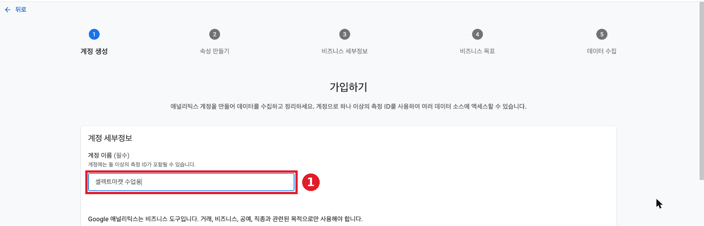
계정 만들기 빨간 번호 = 누를 곳(순서) 속성 이름(①)에 [연말 이벤트 신청 페이지]를 쓰고, 보고 시간대(②)는 [대한민국], 통화는 [대한민국 원(₩)]으로 골라 [다음](③)을 눌러요. 업종·규모·비즈니스 목표를 고르고 [만들기]를 눌러요.

속성 만들기 플랫폼에서 [웹](①)을 누르고, 웹사이트 URL과 스트림 이름을 써요. 향상된 측정은 켠 채로 [만들고 계속하기]를 눌러요.

웹 데이터 스트림 만들기 [웹 스트림 세부정보]에서 G-로 시작하는 측정 ID를 확인해요.

측정 ID 주황 점선 = 확인할 곳
실습2-2. 설치 코드 두 가지: G- 와 GTM-
[웹 스트림 세부정보] 아래 [태그 안내 보기] → [직접 설치] 탭을 열어요. 처음에는 G-로 시작하는 'Google 전용 태그' 코드가 보여요.
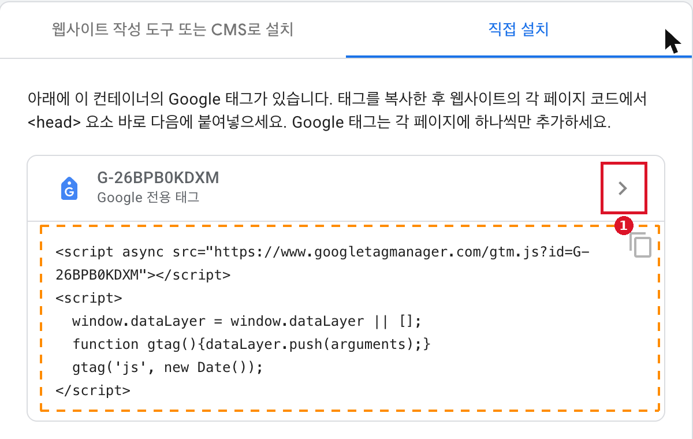
오른쪽 꺾쇠(①)를 누르면 [컨테이너 ID 선택] 창이 열려요. 같은 스트림에 ID가 두 개 있어요.
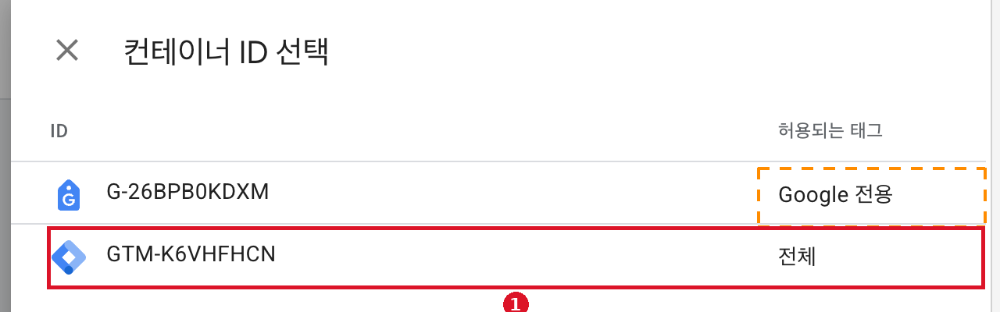
GTM-(①)을 고르면 코드의 ID가 GTM-으로 바뀌고, '모든 태그'라고 나와요. 이 코드를 복사해요.
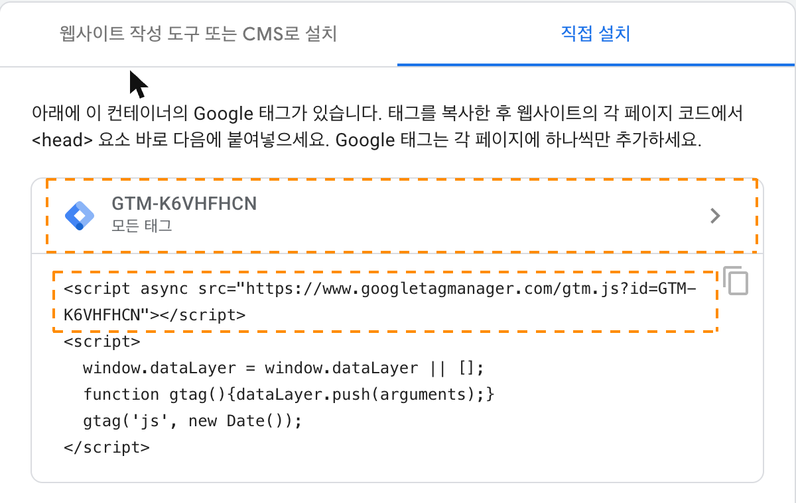
| 고르는 ID | 화면 표시 | 담을 수 있는 태그 | 이럴 때 골라요 |
|---|---|---|---|
| G- | Google 전용 태그 | Google이 제공하는 태그·변수만 | GA4만 쓰고, 이벤트는 개발자가 코드로 넣을 때 |
| GTM- | 모든 태그 | 전체 (GA4 이벤트, 메타 픽셀, 핫자 등) | 나중에 코드 수정 없이 이벤트·광고 태그를 더하고 싶을 때 |
예전 설치 코드는 gtag/js?id=G-…를 부르고, 아래에 gtag('config', 'G-…') 줄이 있었어요. 지금 코드에는 config 줄이 없어요. 어떤 측정 ID로 보낼지는 코드가 아니라 컨테이너 안에 저장돼 있어요.
개념2-3. 왜 GTM 컨테이너 코드를 줄까
GA4 스트림을 만들면 GTM(tagmanager.google.com)에도 같은 이름의 컨테이너가 생겨요. 강사 계정에서 GTM을 열어 보니 스트림 이름과 같은 컨테이너(GTM-K6VHFHCN) 안에 'Google Analytics G-26BPB0KDXM' 태그가 [Initialization - All Pages] 트리거로 이미 들어 있었어요.
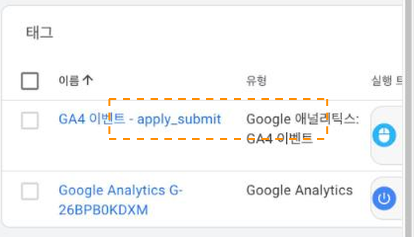
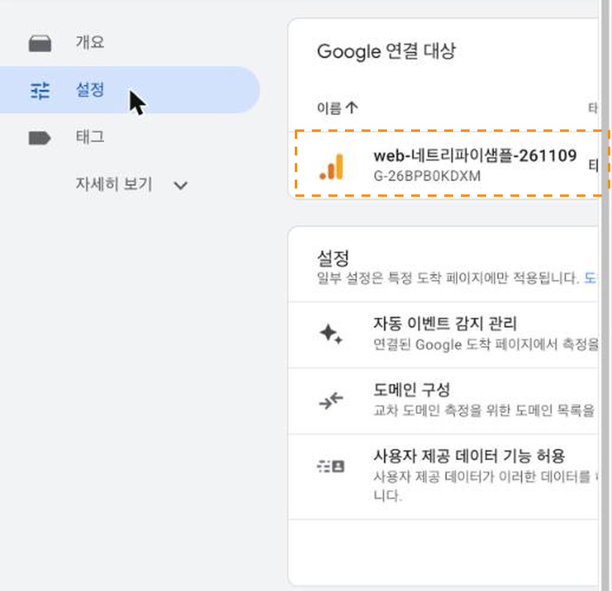
Google은 2026년에 Tag Manager 공지로 이렇게 바꾸고 있다고 밝혔어요.
| 날짜 | 공지 내용(요약) | PM에게 뜻하는 것 |
|---|---|---|
| 2026-07-09 | GTM-로 불러온 컨테이너는 제한이 없고, G- 같은 제품 ID로 불러오면 Google이 제공한 태그·변수만 허용 | 메타 픽셀 같은 다른 회사 태그까지 화면에서 관리하려면 GTM- 코드가 필요해요 |
| 2026-10-08 | gtm.js 컨테이너 코드는 gtag('config') 명령과 관계없이 컨테이너가 로드될 때 시작 | 설치 코드에 config 줄이 없어도 돼요 |
| 2026-10-12 | GTM 컨테이너가 측정 제품으로 직접 데이터를 보내는 기능 추가. 예전에는 gtag.js를 따로 더 불러왔음 | 코드 하나로 GA4와 다른 태그를 함께 관리해요. 속도도 빨라진다고 해요 |
정리: 설치 코드 하나(컨테이너)만 사이트에 넣고, 무엇을 보낼지는 GTM 화면에서 바꾸게 하려는 것이 Google의 방향이에요. 단, 'GA4 스트림을 새로 만들면 GTM- 코드를 준다'고 날짜를 밝힌 공식 문장은 찾지 못했어요. 위 화면은 강사 계정에서 확인한 것이에요.
실습2-4. 내 페이지에 GTM 코드 붙이기
월요일 수업에서 이벤트 신청 페이지를 네트리파이에 배포했던 것 기억하시나요? 그 페이지에 2-2에서 복사한 GTM- 코드를 넣어요.
프롬프트이벤트 신청 페이지를 만든 클로드 대화에 보내요
요청: 이 웹페이지의 <head> 바로 아래에 Google 태그 코드를 넣어 줘. 내용: 아래 코드를 한 글자도 바꾸지 말고 그대로 넣어. 이미 들어 있는 gtag 코드(gtag/js 또는 G-로 시작하는 코드)가 있으면 지워서 한 페이지에 Google 태그가 하나만 있게 해. 버튼 글자(예: 사전 신청 완료하기)는 바꾸지 마. [2-2에서 복사한 GTM- 코드 붙여 넣기] 형식: 고친 HTML 파일 전체. 코드를 넣은 곳에 "GA4 · GTM 컨테이너" 주석을 달아 줘.
받은 파일을 네트리파이 프로젝트의 [Deploys] 업로드 칸에 끌어다 놓아요.
배포한 주소에서 마우스 오른쪽 → [페이지 소스 보기] → Ctrl+F(맥은 Cmd+F)로
GTM-을 찾아요.GA [보고서] → [실시간 개요]에서 내 방문이 보이는지 봐요.
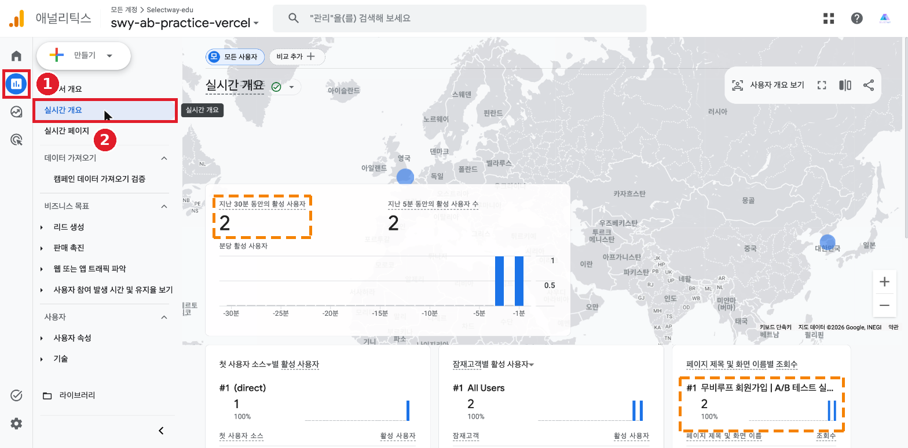
실시간 개요 빨간 번호 = 누를 곳(순서)
- 페이지 소스에 GTM- 코드가 한 번만 있다
- 예전 gtag/js 코드가 남아 있지 않다(두 개면 페이지 조회가 두 번 셀 수 있어요)
- 실시간 보고서에 사용자 수가 1 이상이다
코드 수정 없이 GTM으로 이벤트 추가·수정·삭제
apply_submit 이벤트가 가는 GTM 태그 1개실습3-1. 추가: [사전 신청 완료하기] 클릭을 이벤트로
GTM은 "언제(트리거)"와 "무엇을(태그)"을 따로 만들어 이어 붙여요.
STEP 1. 트리거 만들기 — 언제 보낼까
tagmanager.google.com에서 2-3의 컨테이너를 열고 왼쪽 [자세히 보기] → [트리거] → [트리거 추가]를 눌러요. 이름 칸에 [클릭 - 사전 신청 완료하기 버튼]을 써요.
[트리거 구성]을 누르고 '클릭' 아래 [모든 요소](①)를 골라요.
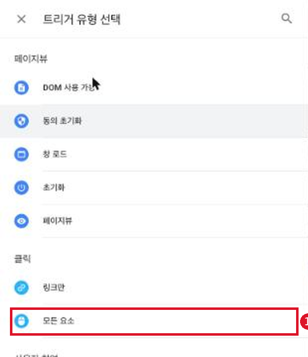
트리거 유형 빨간 번호 = 누를 곳 [일부 클릭](①)을 고르고, 조건 칸(②)에 Click Text · 포함 · 사전 신청 완료하기를 넣어요. 변수 목록에 Click Text가 없으면 [기본 제공 변수 선택…]에서 고르면 돼요. [저장](③)을 눌러요.
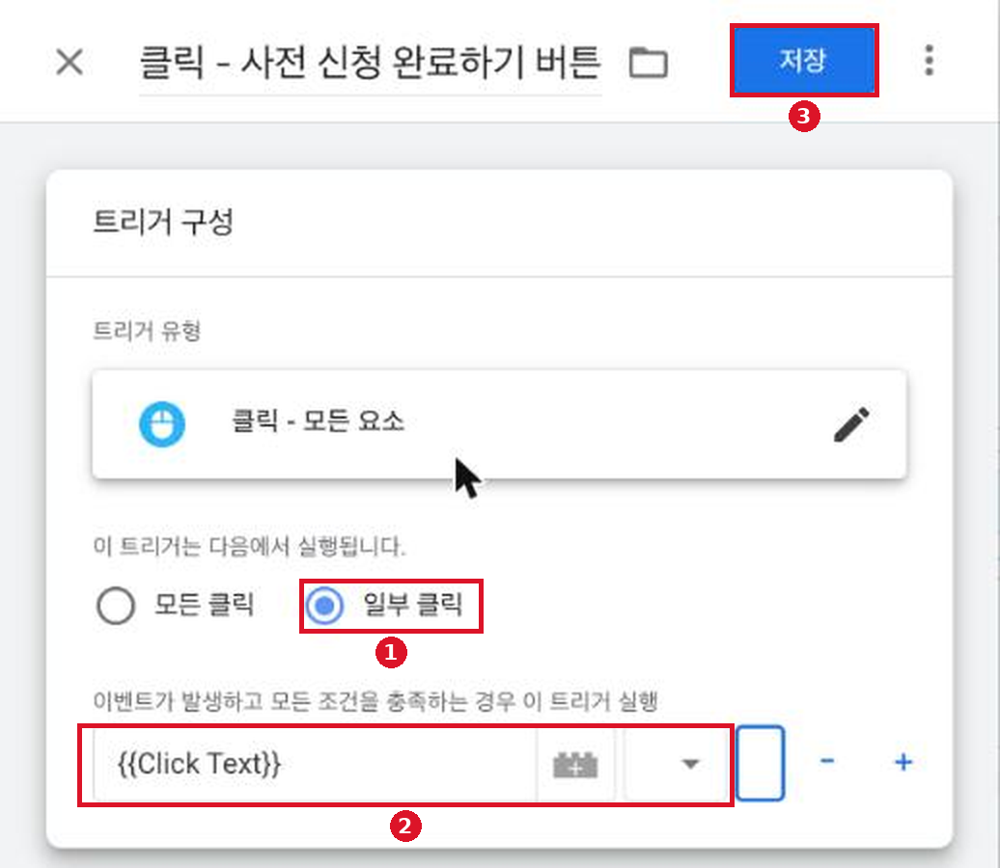
클릭 트리거. 화면이 좁으면 값 칸이 가려져요. 저장 뒤 목록에서 'Click Text 포함 사전 신청 완료하기'로 보이면 맞아요 빨간 번호 = 누를 곳(순서)
STEP 2. 태그 만들기 — 무엇을 보낼까
[태그] → [새로 만들기]를 누르고 이름 칸에 [GA4 이벤트 - apply_submit]을 써요.
[태그 구성] → [Google 애널리틱스] → [Google 애널리틱스: GA4 이벤트](①)를 골라요.
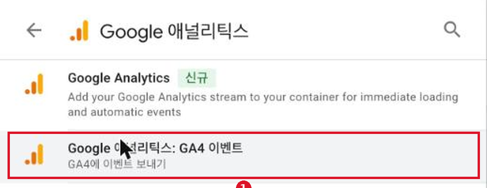
GA4 이벤트 태그 빨간 번호 = 누를 곳 측정 ID에 G-로 시작하는 내 ID를, 이벤트 이름에
apply_submit을 써요. '목적지를 찾았습니다'가 보이면 맞아요. [트리거]에서 STEP 1의 트리거(①)를 고르고 [저장](②)을 눌러요.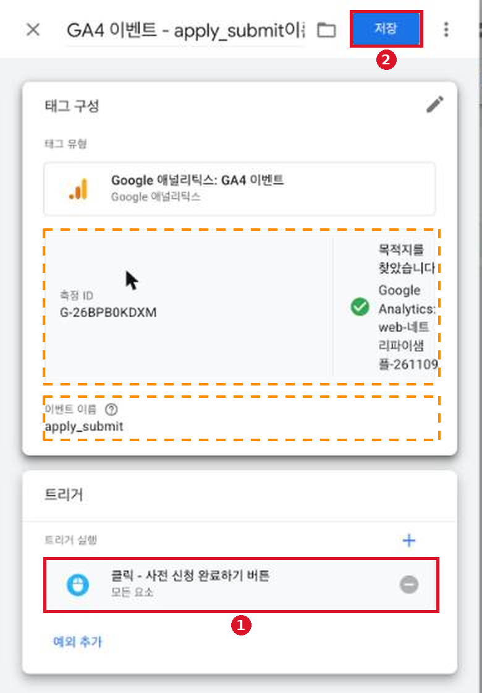
완성한 태그(제목 칸 글자는 저장 전 화면이라 길게 보여요) 빨간 번호 = 누를 곳(순서) 주황 점선 = 확인할 곳
소문자와 밑줄, '대상_행동' 순서. 버튼 글자 같은 바뀌는 값은 이벤트 이름에 넣지 말고 이벤트 매개변수(예: button_text = {{Click Text}})로 보내요.
실습3-2. 미리보기로 확인하기
GTM 오른쪽 위 [미리보기]를 누르면 Tag Assistant가 새 탭으로 열려요. 웹사이트 URL(①)에 내 페이지 주소를 넣고 [연결](②)을 눌러요. 내 페이지가 새 창으로 열려요.
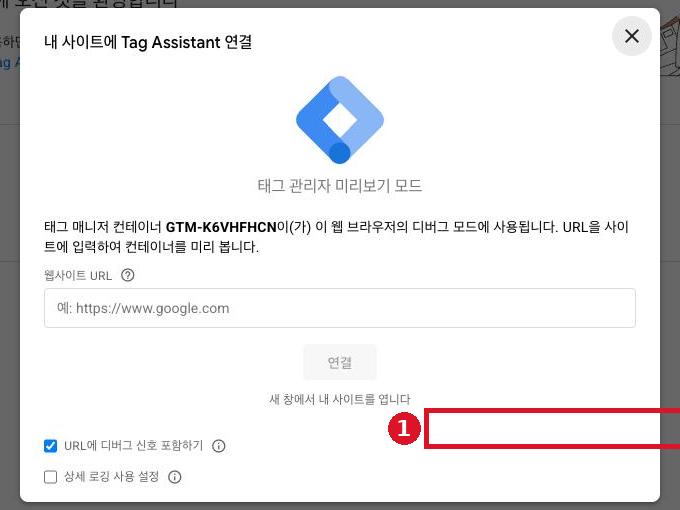
Tag Assistant 연결 빨간 번호 = 누를 곳(순서) 새 창에서 [사전 신청 완료하기]를 누르고, Tag Assistant 왼쪽 목록에 '클릭'이 생겼는지, [태그] 탭에 'GA4 이벤트 - apply_submit'이 실행됨으로 보이는지 봐요.
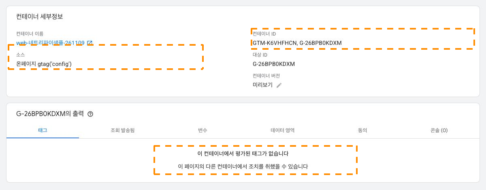
| 이렇게 보이면 | 이렇게 해요 |
|---|---|
| 소스가 '온페이지 gtag('config')'이고 평가된 태그가 없어요 | 페이지에 예전 gtag/js 코드가 들어 있어요. 2-4를 다시 해서 GTM- 코드로 바꿔요 |
| 클릭이 목록에 안 생겨요 | Tag Assistant가 연 새 창에서 눌렀는지 봐요. 원래 탭에서 누르면 기록되지 않아요 |
| 클릭은 있는데 태그가 '실행되지 않음' | [변수] 탭에서 Click Text 값을 보고 트리거 조건 글자와 같은지(띄어쓰기 포함) 봐요 |
확인 필요: GTM- 코드로 바꾼 페이지에서 apply_submit이 '실행됨'으로 보이는 화면과 DebugView 캡처(테스트 페이지에 GTM- 코드 적용 후 촬영)
실습3-3. 수정 · 삭제하기
| 하고 싶은 일 | GTM에서 하는 곳 | 예시 |
|---|---|---|
| 이벤트 이름 바꾸기 | [태그] → 태그 열기 → 이벤트 이름 칸 | Apply_Submit → apply_submit |
| 조건 바꾸기 | [트리거] → 트리거 열기 → 조건 칸 | 버튼 글자가 [신청 완료]로 바뀌면 조건 글자도 바꿔요 |
| 매개변수 더하기 | 태그 → [이벤트 매개변수] → [매개변수 추가] | button_position = 상단 |
| 잠시 끄기 | 태그 목록에서 체크 → [일시중지] | 이벤트 기간이 끝난 프로모션 클릭 |
| 지우기 | 태그 열기 → 오른쪽 위 점 세 개 → [삭제] | 같은 행동을 두 번 세던 태그 |
실습3-4. 제출해야 실제 사이트에 반영돼요
GTM에서 만든 태그는 [제출] → [게시]를 눌러야 실제 사이트에 반영돼요. 그 전에는 미리보기에서만 보여요. 버전 이름에 날짜와 바꾼 내용(예: 1110 apply_submit 추가)을 써 두면, 문제가 생겼을 때 [버전]에서 예전 버전으로 되돌릴 수 있어요.
개발자가 이벤트를 못 고칠 때: UTM과 GA 화면 설정
개념4-1. UTM이란?
UTM은 링크 주소 끝에 붙이는 꼬리표예요. 사용자가 그 링크로 들어오면 GA4가 꼬리표를 읽어 "어느 광고·메일·게시물로 왔는지"를 기록해요. 사이트 코드는 하나도 고치지 않아요.
https://selectmarket.example/event?utm_source=newsletter&utm_medium=email&utm_campaign=2026_yearend_preapply&utm_content=top_banner
| 꼬리표 | 뜻 | 셀렉트마켓 예 |
|---|---|---|
| utm_source 항상 | 어디서 왔나(사이트·서비스 이름) | newsletter, instagram, naver |
| utm_medium 항상 | 어떤 방식으로 왔나 | email, social, cpc |
| utm_campaign 항상 | 어떤 캠페인인가 | 2026_yearend_preapply |
| utm_content | 같은 캠페인 안에서 어떤 소재인가 | top_banner, story_02 |
| utm_term | 유료 검색 키워드 | 연말선물 |
| utm_id | 캠페인 ID | yearend26 |
Instagram과 instagram은 다른 줄로 나와요. 소문자로 통일해요. ③ 내 사이트 안의 링크(메뉴·배너)에는 붙이지 않아요. 들어온 경로가 내 사이트로 덮어쓰일 수 있어요(공식 도움말에는 이 경고가 없어 실무 관행으로 안내해요).주소는 Google의 Campaign URL Builder에 칸을 채우면 만들어져요.
실습4-2. 셀렉트마켓 UTM 규칙표 만들기
UTM은 사람이 손으로 붙이기 때문에, 팀이 같은 표를 보고 붙여야 숫자가 모여요.
빈 템플릿UTM 규칙표
| 채널 | utm_source | utm_medium | utm_campaign | utm_content | 완성 주소 |
|---|---|---|---|---|---|
| 뉴스레터 | newsletter | ||||
| 인스타그램 스토리 | social | ||||
| 카카오 채널 |
프롬프트클로드 새 대화에 보내요
요청: 연말 사전 신청 캠페인의 UTM 규칙표와 채널별 링크를 만들어 줘. 내용: 도착 주소는 [내 신청 페이지 주소]야. 채널은 [뉴스레터, 인스타그램 스토리, 카카오 채널]이야. 값은 모두 소문자와 밑줄로 쓰고, utm_source·utm_medium·utm_campaign은 꼭 넣어. 캠페인 이름은 하나로 통일해. 내가 말하지 않은 채널은 추가하지 마. 형식: 표(채널 / utm_source / utm_medium / utm_campaign / utm_content / 완성 주소). 표 아래에 팀이 지킬 규칙 3줄.
- 모든 주소에 source·medium·campaign이 있다
- 값에 대문자·띄어쓰기·한글이 없다
- 캠페인 이름이 채널마다 같다
실습4-3. UTM으로 들어온 사람 보기
[보고서] → [획득] → [트래픽 획득]을 열고, 표의 측정기준을 [세션 소스/매체] 또는 [세션 캠페인]으로 바꿔요. UTM 값이 줄마다 보여요.

UTM은 [방문 페이지 + 쿼리 문자열] 측정기준에서는 빠지고, [페이지 위치](page_location)에 남아요. 4-4에서 완료 페이지와 함께 쓰면 "뉴스레터로 와서 신청을 마친 사람"을 셀 수 있어요.
실습4-4. 완료 페이지로 이벤트 만들기
신청을 마치면 완료 페이지(예: /thanks)로 넘어가는 사이트라면, 그 페이지의 page_view로 GA 화면에서 새 이벤트를 만들 수 있어요. 코드도 GTM도 필요 없어요.
[관리] → [데이터 표시] → [이벤트]를 열어요. [최근 활동](①) 탭에 지난 28일 동안 들어온 이벤트가 보여요.
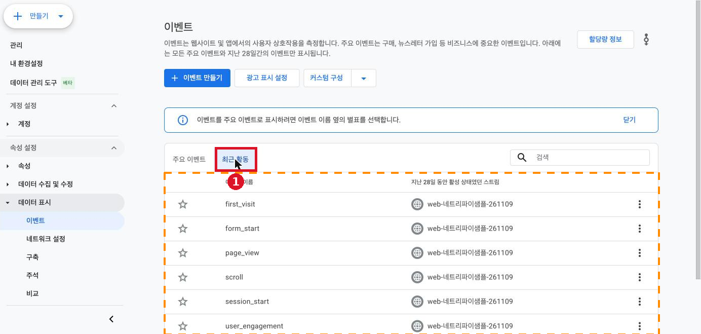
관리 › 데이터 표시 › 이벤트(2026년 11월 10일 강사 테스트 속성) 빨간 번호 = 누를 곳 주황 점선 = 확인할 곳 [+ 이벤트 만들기]를 누르고 이벤트 이름 칸(①)에
apply_complete를 써요. 성과로 셀 거라면 [주요 이벤트로 표시]도 켜요.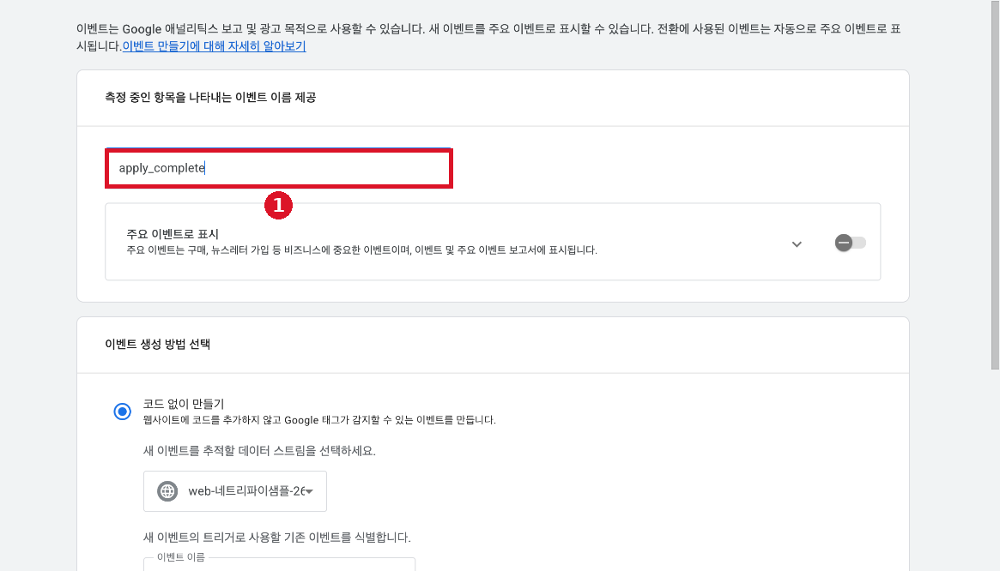
이벤트 만들기: 이름 빨간 번호 = 누를 곳 [코드 없이 만들기]가 골라진 상태에서 데이터 스트림(①), 기존 이벤트
page_view(②)를 고르고, URL 칸(③)에/thanks를 써요. 일치 조건은 'URL contains'(포함)로 정해져 있어요. 아래 문장이 "/thanks 조건이 포함된 페이지를 로드하면 apply_complete 이벤트를 기록합니다"로 바뀌면 [만들기](④)를 눌러요.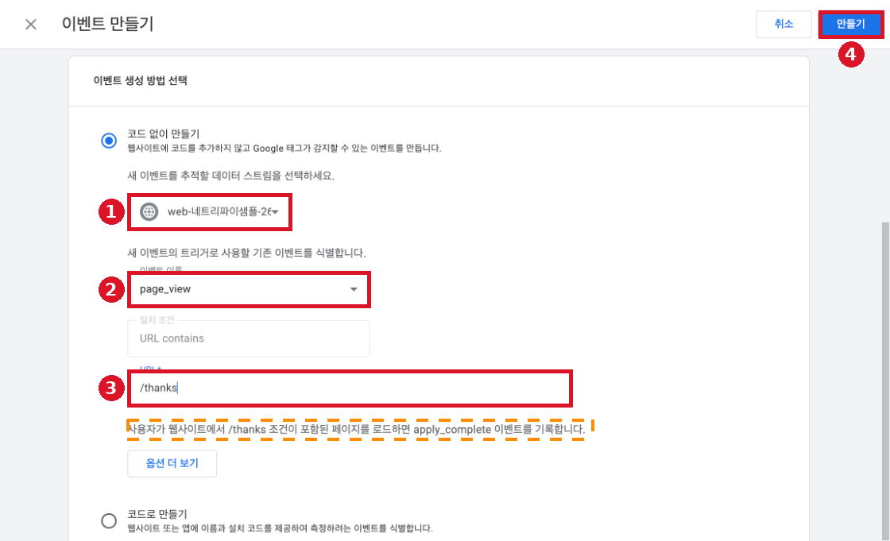
코드 없이 만들기 빨간 번호 = 누를 곳(순서) 주황 점선 = 확인할 곳
도움말은 event_name·page_location 조건을 직접 넣는 표로 설명하지만, 2026년 11월 10일 화면에서는 '코드 없이 만들기'에서 기존 이벤트와 URL만 넣었어요. 매개변수 조건이 더 필요하면 [옵션 더 보기]를 눌러요.
| 알아 둘 것 | 내용 |
|---|---|
| 지난 데이터 | 만든 날부터만 세져요. 지난 기간에는 적용되지 않아요 |
| 반영 시간 | 한 시간 이상 걸릴 수 있어요 |
| 한도 | 속성당 이벤트 수정 50개, 새로 만들기 50개 |
| page_view는 수정하지 않기 | [이벤트 수정]으로 page_view 자체를 바꾸면 다른 페이지의 조회가 안 세져요. 꼭 [이벤트 만들기]로 복사본을 만들어요 |
| 이름 바꾸기 | 주요 이벤트를 [이벤트 수정]으로 이름을 바꾸면 주요 이벤트 표시가 풀려요 |
| 상황 | 쓸 방법 |
|---|---|
| 개발자가 코드를 고쳐 줄 수 있다 | 코드로 이벤트 심기(6장 텍소노미 표를 주고 요청) |
| GTM- 코드가 이미 들어가 있다 | 3장: GTM에서 이벤트 추가·수정·삭제 |
| 둘 다 안 되지만 완료 페이지가 따로 있다 | 4-4: GA 화면에서 page_view로 이벤트 만들기 |
| 아무것도 고칠 수 없다 | 4-1~4-3: UTM으로 들어온 경로만이라도 나눠 보기 |
조심할 점: 핵심 제한
설명5-1. 이벤트를 보낼 때의 제한
| 항목 | 표준 속성 | 360 속성 |
|---|---|---|
| 이벤트 이름 길이 | 40자 | 40자 |
| 이벤트당 매개변수 수 | 25개 | 100개 |
| 매개변수 이름 길이 | 40자 | 40자 |
| 매개변수 값 길이 | 100자 예외: page_title 300자 · page_referrer 420자 · page_location 1,000자 | 500자 (page_location 1,000자) |
| 사용자 속성 수 | 속성당 25개 | 100개 |
| 사용자 속성 이름 / 값 길이 | 24자 / 36자 | 24자 / 36자 |
| User-ID 값 길이 | 256자 | — |
| 서로 다른 이벤트 이름 수 | 앱: 사용자당 500개 · 웹: 제한 없음 | 앱: 2,000개 |
| 사용자 1명의 하루 이벤트 수 | 100,000개 (태그·SDK로 보낼 때) | — |
%EB%AC%B4처럼 9자가 돼서, 한글이 들어간 주소는 생각보다 빨리 1,000자에 닿아요.360 칸의 '—'는 360 비교 표에 따로 적혀 있지 않은 항목이에요. 글자 수 제한은 360으로도 늘릴 수 없어요.
설명5-2. 설정할 때의 제한
| 항목 | 표준 속성 | 360 속성 |
|---|---|---|
| 이벤트 범위 맞춤 측정기준 | 50개 | 125개 |
| 사용자 범위 맞춤 측정기준 | 25개 | — |
| 상품 범위 맞춤 측정기준 | 10개 | 25개 |
| 이벤트 범위 맞춤 측정항목 | 50개 | 125개 |
| 주요 이벤트 | 30개 | 50개 |
| GA 화면의 이벤트 수정 / 만들기 | 각 50개 | — |
| 잠재고객 | 100개 | 400개 |
| 데이터 보관 기간(탐색·유입경로에 적용) | 2개월 또는 14개월 | 최대 50개월 |
| 보고서 내보내기(CSV·시트) | 100,000행 | — |
- 이름이 40자를 넘는 이벤트는 처리되지 않고, 주요 이벤트로도 집계되지 않아요.
- 26번째 사용자 속성은 처리되지 않아요.
- 설정 한도에 닿으면 더 만들 수 없어요. 안 쓰는 것을 보관(Archive)해야 새로 만들 수 있어요.
- 보관 기간은 [관리] → [데이터 수집 및 수정] → [데이터 보관]에서 바꿔요. 기본값이 2개월일 수 있으니 처음에 14개월로 바꿔요.
이벤트 텍소노미: 무엇을 어떤 이름으로 셀까
개념6-1. 이벤트 텍소노미란?
이벤트 텍소노미는 어떤 행동을, 언제, 어떤 이름과 매개변수로 셀지 정한 약속 표예요. 트래킹 플랜이라고도 불러요.
- 이름은 '대상_행동' 순서, 소문자와 밑줄로 지어요. 예:
apply_button_click,apply_submit - GA4 이벤트 이름은 대소문자를 구분해요. 문자로 시작하고, 띄어쓰기를 쓸 수 없고, 40자를 넘을 수 없어요.
- 바뀌는 값(상품 이름, 날짜)은 이름에 넣지 않고 매개변수로 보내요.
- 맞춤 이벤트를 만들기 전에 추천 이벤트(
generate_lead,sign_up,purchase)에 맞는 것이 있는지 먼저 봐요.
| 이벤트 이름 | 언제 보내나 | 어디서 | 매개변수 | 답하려는 질문 | 심는 방법 |
|---|---|---|---|---|---|
| apply_button_click | [신청하기]를 누를 때 | 상단·하단 | button_position | 어느 위치 단추가 많이 눌리나 | GTM |
| apply_submit | [사전 신청 완료하기]를 누를 때 | 신청 폼 | button_text | 제출을 시도한 사람은 몇 명인가 | GTM(3장) |
| apply_complete | 완료 페이지가 열릴 때 | /thanks | — | 실제로 신청을 마친 사람은 몇 명인가 | GA 화면(4-4) |
'언제 보내나' 칸이 가장 중요해요. 단추를 누른 수(apply_submit)와 신청이 저장된 수(apply_complete)는 다른 숫자예요. 빈칸 때문에 저장되지 않은 신청도 클릭으로는 세지기 때문이에요. 표에 '심는 방법' 칸을 두면 개발자·마케터·PM이 각자 할 일을 나눌 수 있어요.
사례6-2. 실무 사례: 구독형 미디어 A사
강사가 2026년에 맡았던 GA 점검 프로젝트예요. 고객사 이름과 숫자는 가리고 비율만 남겼어요. 이벤트 기간 방문자는 작년의 약 2배인데 결제 금액은 줄어서, GA·회원 DB·결제 데이터를 대조했어요.
| 발견 | 무엇이 있었나 | 그래서 생긴 일 |
|---|---|---|
| 이름이 제각각 | 한글·영문 이름이 섞이고, 가입을 뜻하는 이벤트만 네 개 | "가입이 몇 명인가"에 답하려면 어느 이벤트를 볼지부터 회의해야 했어요 |
| '언제'가 없음 | '가입' 이벤트가 가입 페이지를 열 때 보내짐 | GA 가입 수가 실제 신규 가입자의 약 100배 |
| 태그가 끊김 | 사이트를 고친 뒤 일부 이벤트가 0 | 작년과 GA로 비교할 수 없었어요 |
| 방문의 질 | 늘어난 방문은 대부분 직접 유입, 해외 데이터센터 도시, 1초 체류 | 봇 방문 가능성. 국내 방문은 약 60% 감소 |
| 설치 방식이 섞임 | GTM과 사이트 코드 양쪽에 같은 측정 ID가 들어 있음 | 페이지 조회가 두 번 세질 수 있었어요(2-4 확인할 점) |
- 데이터는 한 곳만 믿지 않아요. GA, 회원 DB, 결제 데이터를 대조해요.
- 이벤트 이름보다 '언제 보내나'가 더 중요해요.
- 사이트를 고칠 때마다 이벤트가 그대로 들어오는지 7-2 목록으로 확인해요.
보고서 읽기와 이벤트 목록 내려받기
실습7-1. 데모 계정으로 보고서 읽기
애널리틱스 고객센터 데모 계정 도움말의 [Google 애널리틱스 4 속성: Google Merchandise Store(웹 데이터)](①) 링크를 눌러요. 주소를 직접 붙여 넣지 말고 도움말의 링크를 눌러요.

데모 계정 열기 빨간 번호 = 누를 곳 [탐색] → [유입경로 탐색 분석]을 열고 [단계] 연필을 눌러, 3단계를 [장바구니 담기] · add_to_cart로 바꿔요. 유입경로의 단계는 결국 이벤트 이름이에요.

유입경로 단계 바꾸기 빨간 번호 = 누를 곳(순서)
실행 결과먼저 해 보고 펼쳐 비교해요
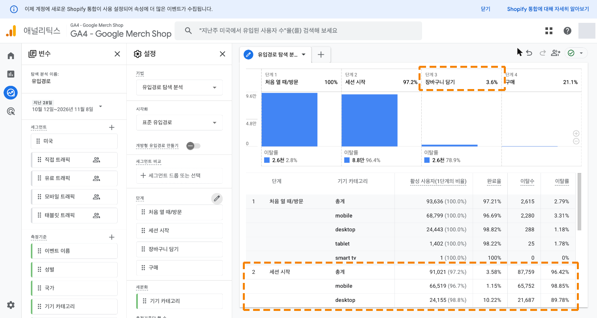
보고서는 답이 아니라 다음에 확인할 질문을 줘요. "가장 많이 빠지는 단계는 어디고, 왜일까?"를 한 줄로 써요.
실습7-2. 수집 중인 이벤트 전부 CSV로
[보고서] → [참여도] → [이벤트]를 열어요. 새로 만든 속성은 메뉴가 비즈니스 목표로 묶여 있어서 [사용자 참여 발생 시간 및 유지율 보기] → [이벤트](①)에 있어요. 이벤트 이름마다 이벤트 수·총사용자가 나와요.
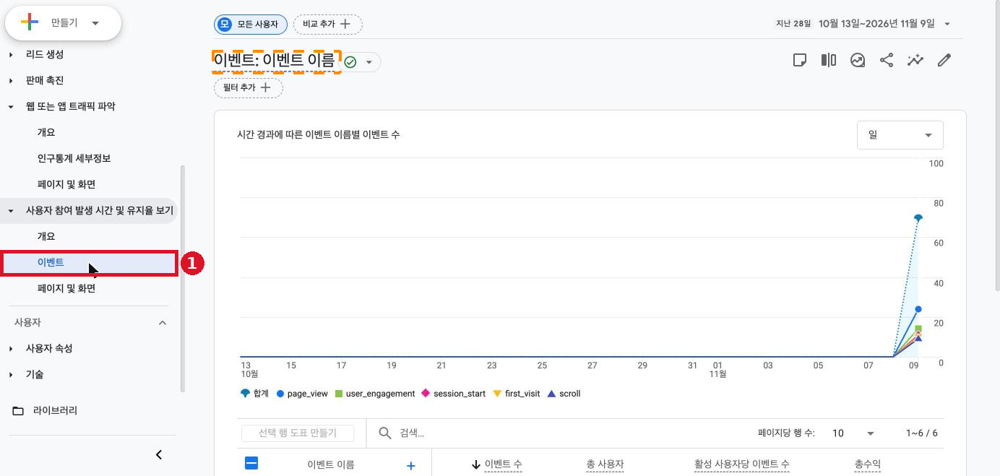
이벤트 보고서(2026년 11월 10일 강사 테스트 속성) 빨간 번호 = 누를 곳 주황 점선 = 확인할 곳 오른쪽 위 날짜를 눌러 기간을 넓혀요(예: 최근 12개월). 기간 안에 한 번도 안 들어온 이벤트는 표에 없어요.
오른쪽 위 공유 아이콘(①) → [파일 다운로드](②)를 눌러요.
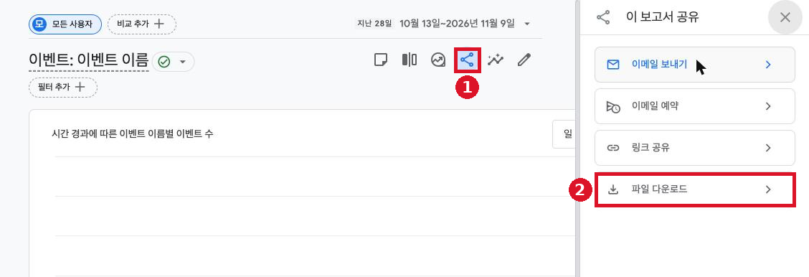
이 보고서 공유 빨간 번호 = 누를 곳(순서) [CSV 다운로드](①)를 누르면 다운로드 폴더에 저장돼요. 바로 시트로 보려면 [Google Sheets로 내보내기]를 눌러요.
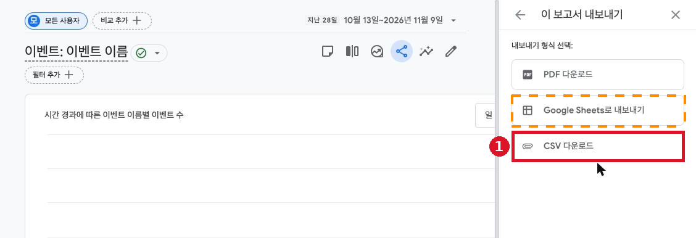
내보내기 형식 빨간 번호 = 누를 곳 주황 점선 = 다른 방법
내보낸 파일 맨 위 9줄은 #으로 시작하는 설명(보고서 이름, 계정, 속성, 시작일·종료일)이고, 표는 10번째 줄부터 시작해요. 시트에서 계산하려면 1~9행을 지우거나, 10행부터 범위를 잡아요.
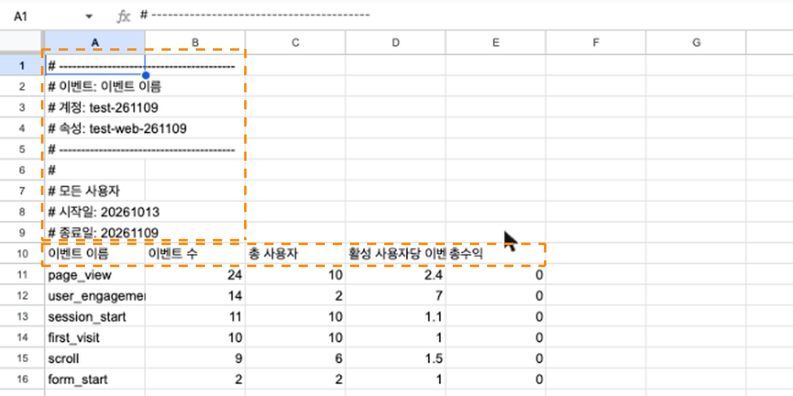
| 알아 둘 것 | 내용 |
|---|---|
| 권한 | 속성에 '뷰어' 이상. 데모 계정은 내보내기가 안 돼요 |
| 행 수 | CSV·구글 시트는 100,000행까지 |
| 반영 시간 | 이벤트 보고서에는 길게는 24시간 뒤에 나와요. 방금 보낸 이벤트는 [실시간] 보고서에서 봐요 |
| 막히면 | 보고서를 맞춤설정(연필) 하는 중에는 공유할 수 없어요. 맞춤설정을 닫고 다시 해요 |
실습7-3. 매개변수까지 보려면: 탐색
[탐색] → [자유 형식]에서 측정기준에 [이벤트 이름]과 1-4에서 등록한 맞춤 측정기준을, 측정항목에 [이벤트 수]를 넣어요. 오른쪽 위 [데이터 내보내기]에서 CSV를 골라요. 화면에 보이는 줄보다 많은, 그 시각화의 모든 데이터가 담겨요.
선택7-4. 보고서를 메일로 받기
자주 보는 보고서는 [이 보고서 공유] → [이메일 예약]으로 매주 받아 봐요. 속성 관리자만 예약할 수 있고, 받는 사람은 그 속성에 접근 권한이 있어야 해요. 형식은 PDF 또는 CSV예요.

결과: 이벤트 목록 점검표
7-2에서 내려받은 CSV를 구글 시트에 열고, 6장의 텍소노미 표와 나란히 놓고 채워요.
빈 템플릿내 이벤트 목록 점검표
| 이벤트 이름 | 종류(자동·향상된 측정·추천·맞춤) | 이벤트 수 | 심은 방법(코드·GTM·GA 화면) | 텍소노미 표에 있나? | 비슷한 이름 있음? | 주요 이벤트? | 계속 쓸까요? |
|---|---|---|---|---|---|---|---|
Click_Banner와click_banner처럼 대소문자만 다른 이름이 있는지 봐요.- 보냈다고 알고 있는데 목록에 없는 이벤트는 5장 제한, 3-4 제출 여부, 2-4 설치 코드를 차례로 봐요.
- 트래픽 획득 보고서에 (not set)이나 대문자 섞인 UTM 값이 있으면 4-2 규칙표를 고쳐요.
GTM 이벤트 1개 + UTM 규칙표 + 이벤트 목록 점검표
코드를 고치지 않고 측정을 늘리는 길(GTM·GA 화면·UTM)과, 지금 무엇이 쌓이는지 보여 주는 표를 갖게 됐어요. 다음 기획서의 '측정 계획' 칸은 이 표에서 시작해요.
출처
공식 도움말은 모두 2026.11.10에 확인했어요. 화면은 강사 테스트 계정(GA4 속성 test-web-261109, GTM 컨테이너 GTM-K6VHFHCN)과 GA4 데모 계정에서 찍었어요.
| 내용 | 자료 |
|---|---|
| 설치 코드·컨테이너(2-2, 2-3) | Tag Manager 출시 노트(2026-07-09, 10-08, 10-12) · GTM 컨테이너 최적화 · GTM에서 Google 태그 설정 |
| UTM(4-1~4-3) | URL 작성 도구: 캠페인 데이터 수집 · Campaign URL Builder |
| GA 화면에서 이벤트 만들기(4-4) | 이벤트 이름 바꾸기 및 새 이벤트 생성 · 주요 이벤트 만들기 또는 수정 |
| 제한(5장) | 이벤트 수집 한도 · 구성 한도 · GA 360 한도 · 상품 범위 맞춤 측정기준 · 데이터 보관 |
| 이벤트 종류(1-3) | 자동으로 수집되는 이벤트 |
| 보고서·내보내기(7장) | 이벤트 보고서 · 보고서 공유 및 내보내기 · 탐색 공유 및 내보내기 |
| 발췌한 교안 | AI PM 3주차 월요일 4·5세션(GA 붙이기, 데모 계정, 이메일 예약, 이벤트 텍소노미, A사 사례) |